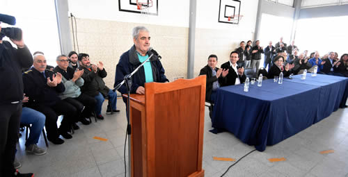
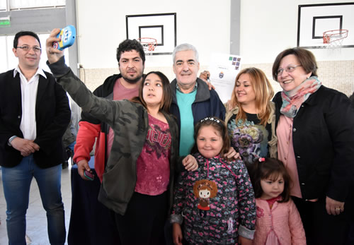

Real Chubut - Agencia de Noticias


Das Neves entregó esta mañana 32 viviendas en Trelew y anunció próximas licitaciones para construir más casas

Valoró que entre los adjudicatarios hay familias con niños con algún grado de discapacidad, madres solteras y jubilados.
El gobernador del Chubut, Mario Das Neves, entregó esta mañana en la ciudad de Trelew a sus adjudicatarios las llaves de 32 viviendas construidas a través de la operatoria del Instituto Provincial de la Vivienda, que destinó más de 20 millones de pesos para su ejecución.
El acto se desarrolló en la Escuela N° 224 y el gobernador estuvo acompañado por su esposa, Raquel Di Perna; el intendente de Trelew, Adrián Maderna; el diputado nacional Sixto Bermejo, además de ministros, secretarios, subsecretarios, diputados provinciales, directivos del Banco del Chubut, funcionarios municipales y concejales.
Durante la ceremonia de entrega de las viviendas, que fue acompañada por numerosos familiares y amigos de los adjudicatarios, el gobernador Das Neves agradeció a los presentes y manifestó estar “muy feliz, porque entre las familias que reciben las casas algunas tienen hijos con algún grado de discapacidad, que requieren de su espacio y la tranquilidad de la familia para acompañar. Por eso estoy muy contento”.

En ese contexto, el mandatario provincial recordó que en sus dos anteriores gestiones de gobierno se incluían en las viviendas para personas con discapacidades baños especiales y se priorizaba que la ubicación de las mismas se encuentre en la esquina de la manzana. “La idea es volver a ese esquema”, señaló Das Neves.
También el mandatario hizo extensivo el agradecimiento al intendente Adrián Maderna, quien elogió el trabajo desarrollado por el equipo de gobierno que encabeza Das Neves, y expresó que “hay palabras que uno recuerda de muchos años, que quedan como una marca registrada, que es la comunidad organizada y este es un hecho que coadyuva a concretarlo”.
“Treinta y dos viviendas es mucho y es poco. Es poco si se tiene en cuenta la cantidad de familias que esperan viviendas, pero cuando se comienza a ver el detalle de los beneficiarios y se encuentra con jubilados, madres solteras, trabajadores, empleados de comercio, una variedad que tiene que ver con nuestra realidad, a mí me pone muy feliz”, expresó Das Neves.

En ese orden, sostuvo que “lo más significativo, que es muy duro, es el esfuerzo que hacen las familias para pagar un alquiler, para tener las comodidades mínimas para vivir” y añadió que “vamos a seguir con la construcción de viviendas para que esta alegría que expresan hoy 32 familias pueda multiplicarse”.
Das Neves anunció además que el 11 de septiembre se entregarán en Trelew 22 viviendas más y que en pocos días más se producirá la licitación de 20 y 48 viviendas más.
“Pero además hay mucho para hacer, no son fáciles los momentos, pero está el firme compromiso que asumimos cuando nos presentamos a las urnas. Lo asumimos, trabajamos y acá estamos cumpliendo”, sostuvo.
SATISFACCION
El intendente Maderna, por su parte, expresó su satisfacción por la entrega de las unidades habitacionales y manifestó que “poder tener otro domingo con 32 viviendas a las familias que hace mucho tiempo que vienen esperando, es un honor y un orgullo. Esto habla muy bien del esfuerzo de un gobierno que pelea incesantemente, de un gobernador que nos tiene presentes y sin ninguna duda vamos a seguir haciendo cosas”.

En otro tramo de su alocución, el jefe comunal agradeció “a toda la gente por la paciencia, son momentos difíciles desde el punto de vista económico, pero cuando hay esperanza, hay trabajo y hay ejemplos como el de Mario se pueden concretar los anhelos”.
“Este es un gobierno con mucha presencia. Lo hablo desde la Municipalidad de Trelew, vamos a seguir haciendo muchas cosas juntos. Por eso agradecer y felicitar a las 32 familias que recibieron sus llaves y que esto siga siendo una realidad durante los próximos años”, concluyó Maderna.


PUBLICIDAD